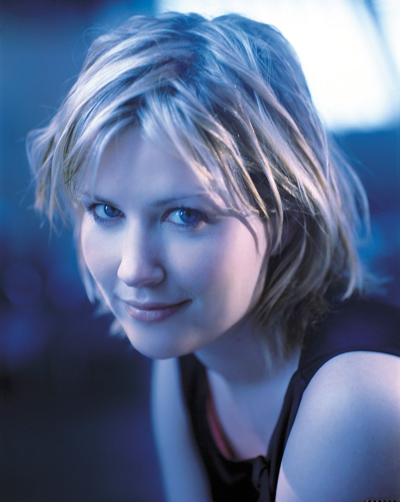

Reconhecida atualmente como a artista mais popular do Reino Unido, Dido lançou dois álbuns que se tornaram verdadeiros clássicos em sua terra natal. "No Angel" e "Life For Rent" venderam o suficiente para se tornarem dois dos 20 discos mais vendidos de todos os tempos no Reino Unido. Mas o sucesso e o reconhecimento da cantora e compositora inglesa ultrapassam as fronteiras de sua terra natal: seu último álbum atingiu o topo das paradas em pelo menos 20 países.
Dido Florian Claude de Bouneville Armstrong nasceu no natal de 1971 em Londres. Da infância em Islington, com seus excêntricos pais hippies que não tinham televisão em casa, Dido levou a paixão pela música para toda a vida. Da flauta roubada no "achados e perdidos" da escola aos 6 anos de idade ao estrelato mundial, tudo foi um caminho natural percorrido pela cantora, passando por uma orquestra aos 9 anos de idade, uma escola de música na adolescência, e a participação no grupo de dance music de seu irmão único mais velho, Rollo Armstrong (Roland de Bouneville Armstrong), o Faithless.
 Em 1999 Dido tem a oportunidade de lançar seu primeiro álbum "No Angel" no mercado americano. Anteriormente, a cantora já havia participado de algumas faixas dos álbuns "Reverence" e "Sunday 8pm", do Faithless, que foram extremamente aclamados e bem sucedidos. Mas foi com "No Angel" que teve sua primeira oportunidade de demonstrar todo seu talento como compositora e vocalista, além de co-produzir quase todas as faixas, a maioria delas em parceria com seu irmão. Inicialmente o álbum não causou muito impacto. Mais tarde, com a participação na Lilith Fair Tour, um famoso festival musical itinerante nos EUA onde participam apenas mulheres, e com o sucesso de "Here With Me", música de abertura do popular seriado Roswell, o álbum foi ganhando notoriedade e vendendo consideravelmente. "No Angel" já era disco de ouro nos Estados Unidos quando Dido recebeu o último empurrão que precisava para se tornar uma estrela mundial: em 2000 o famoso e controverso rapper Eminem lança "Stan", música cujo refrão foi extraído de um trecho de "Thank You". Dido aparece no videoclipe de "Stan" e em alguns shows ao lado de Eminem. Isso foi o suficiente para que as vendas de "No Angel" disparassem de vez nos Estados Unidos e para que a cantora se tornasse conhecida em todas as partes do mundo.
No ano seguinte, "Thank You" acabou fazendo ainda mais sucesso que "Stan", tornado-se a oitava música mais executada do ano nas rádios americanas. O álbum "No Angel" emergiu para a quarta posição no ranking da Billboard, permanecendo várias semanas no Top 10, e acabou ganhando 4 discos de platina nos EUA. No Reino Unido o álbum ficou 6 semanas consecutivas (e 7 no total) no topo das paradas, e foi o disco mais vendido de 2001. O álbum alcançou o primeiro lugar em pelo menos 13 países, e superou a marca de 13 milhões de cópias vendidas em todo o planeta.
Depois de algum tempo fora da mídia, tendo feito participações especiais nos álbuns do guitarrista Santana e do Faithless, Dido reaparece em 2003 com o segundo álbum "Life For Rent". Logo na semana de lançamento não havia dúvida de que o disco seria tão bem sucedido quanto o anterior. O álbum vendeu 400 mil cópias no Reino Unido em apenas uma semana, a segunda maior vendagem da história. Alcançando o primeiro lugar em cerca de 20 países, "Life For Rent" já superou a marca de 10 milhões de cópias vendidas.
Em 2004 Dido foi a estrela maior do Brit Awards, ganhando os prêmios de melhor artista feminina e melhor single com "White Flag". Não foi a primeira vez que a cantora passou por essa experiência: em 2002, Dido recebeu o prêmio de melhor álbum com "No Angel" e também de melhor artista feminina.